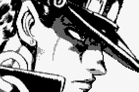
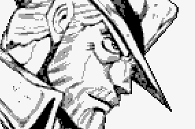
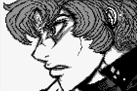
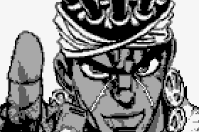
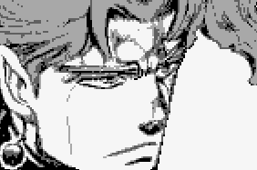
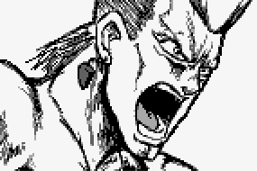
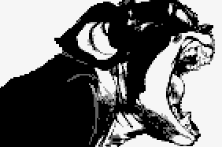

ジョジョ第三部『Stardust・Crusaders』舞台のオーソドックスなRPGです； |

17歳、東京都在住の不良男子高校生。DIOが復活した影響で、スタンド能力に目覚める。そして、スタン ド発現の悪影響で重体になった母のホリィを救うため、ジョセフやモハメド・アヴドゥル、花京院典明や ジャン＝ピエール・ポルナレフ、イギーら仲間たちとともにDIOを打倒すべく、エジプトを目指す。
若さに似合わず、性格は沈着冷静。とりたてて感情を表に出す必要はないと考えでいて、それを当然の ように思っているため、周囲に「冷たい奴」と思われることもしばしば。
しかし、心の底は優しい、母親思 いの青年なのだ。 また、怒ってキレると手のつけようのないバフーを発揮するぞ！つまり不良ながら正義を愛する青年。操るスタンドは「星の白金」。
承太郎の冷静な判断力も手伝って、圧倒的な強さを誇る。名字に「条」、名前 に「承」に続くことから、友達に「ジョジョ」と呼ばれるようになった。

69歳のイギリス出身アメリカ人。若い時、完全生物になったカーズを騙されて、宇宙に放逐したことがあ ります。その後、ニューヨークにて「ジョースター不動産」を経営する不動産王となった。カーズとの戦い で失った左腕には金属製の義手を装着し、その上に手袋を着けて隠している。
溺愛する娘のホリィに 要請され、孫の承太郎の異変に対応すべく日本へ向かう。 青年時代と同じく頭脳戦や駆け引きを得意とし、年月を経て得たさまざまな経験を用いて戦う。運動能 力も年齢と比較して非常に高く、街中を全力疾走してもそれほど息切れした様子も見られなかった。
波 紋能力も失ったわけではなく、必要に応じて波紋の技を使用している。飄然とした言動で一行のムード メーカーを担い、世界を旅した経験を披露したりするが、しばしば調子に乗って失敗することもある。

17歳、子供の頃はイタリアに住んでいて、今東京都在住の男子高校生。優等生気質で、なんでも一番 になりたがり、出世したがる。だがしかし、学校の不良たちの番長なんでした。この間承太郎に倒した、 その後スタンド能力「海の蒼藍」に目覚める。
個人的にそれは，「非日常」の生活を望んでいる。謎の声 と運命に誘われ、ジョースター一行の7人目の同行者として彼らの旅に加わる事になる。 承太郎一行を知る前に、自分の力だけを頼り、自分の意志だけに従う。それに十分な自信と能力があ り、人気あるが超然として衆に交わらない。沈んだは落ち着いていて責任感があり、義侠心が強い人。
冒険好きで勝気でぶしつけだが、警戒心も強く孤独。力強く暴力的で傲慢、攻撃的で怒りっぽく自分勝 手。
だが同時にいつもクールで、洞察力がある。常形なし、能く敵に因りて変化して膳を取る者、これこ そ水野の強さ。パワフルで粘り強く、秩序を重んじ決まりにうるさい。

エジプトのカイロ出身の占い師で、生まれながらのスタンド使い。ジョセフ・ジョスターの友人で、孫の空 条承太郎を檻から出すため、そして彼奴をスタンドというものを理解させるために登場した。
一行の中でチームのブレインと呼べる存在。生真面目で確固たる意思と行動力を持った人物。しかしそ の意思の強さが行き過ぎ頑固かつ短気な一面を覗かせてしまうこともあり、アヴドゥル自身も自らを「 結構熱くなるタイプで、ギャンブルには向いていない」と評している。
友人であり、彼とは正反対の柔軟な 思考力を持ったジョセフはベスト・パートナーと言える。普段の落ち着いた態度に隠れがちだが仲間へ の信頼と思いやりは非常に強い。また、博識な人物でもあり、謎の多い存在であるスタンドに関する知 識も豊富。
他にもハエの絵を見て種類を言い当てたり潜水艦の操縦も出来たりと、かなり幅広い分野 に精通している模様。 ちなみに、大好物はお寿司。
アニメでは茶道も嗜んでおり、日本文化が大好きな

17歳、空条承太郎の通う高校にやってきた転校生、生まれながらのスタンド使い。 「法王の緑」を操作している、素の彼は常に冷静で、分析力が高い上に頭の回転も速い、メンバーの中 での頭脳担当。
頭脳で幾度となく敵の特性や弱点を見抜き、メンバーのピンチを救ったり勝利に導い ている。 人に屈したり従属することを強く恥じ、恐怖に耐えられるよう成長したにだ！家族思いだが、イ ジプトに行くことは家族には伝えいなかった。
「スタンドが見えない人間とは、心の根の部分まで分かり合うことが出来ない」という考えを持ってお り、承太郎達と会う前は友人を作らず、家族ですらも自分の理解者ではなかったことを回想しており、 彼がDIOに取り入られたのはそうした心境を読まれたことが原因であるようで、彼自身も自覚している。

フランスからの男、生来のスタンド使い。高さ8cmに逆立てた特徴的な髪形の持ち主。3年前に最愛の 妹のシェリーを両手が右手の何者かに暴行・殺害され、復讐のために戦うという暗黒面も持ち合わせ ている。
この復讐心をDIOに利用され、一行を襲われた。が、アヴドゥル敗亡後は承太郎らの仲間に。 大胆に行動する、率直で人生を楽しみつくそうとする。社交的に見えるが、人づきあいは苦手。
単純で明 るく女好きなムードメーカーで、全体的に精神年齢が高めの一行の中では最も感情の起伏が激しい。 シモネタギャグシーンや女性がらみのシーンも多め。その一方でDIO戦においては卑怯なことと共に地 獄に堕ちることも厭わないと発言しており、イメージに反して信心深い面がうかがえる。
「戦車の銀」を 操作して、能力自体はシンプルながらも戦闘力は極めて高いスタンド使い。
本人いわく理由があって10 年ほど修業をしたらしく、スタンド使いとしての技量は全員中でもトップクラス。

DIOの本拠地であるエジプトに到着したジョスダー一行の助っ人としてSPW財団から送り込まれたス タンド使いの犬。
元々大金持ちの人間に飼われる由緒正しい血統書付きのボストン・テリアだったが、 成長するに連れ人間を大マヌケと思うようになり家出し、ニューヨークでノラ犬の帝王として君臨して いたところをアヴドゥルが苦心して捕まて、「イギー」の名をくれたんだ。ひねくれてはいるが知能が高い ーー人間の言葉や文化をそれなりに理解しているらしく、また、誇り高き精神の持ち主でもある，DIO、 の館を発見したのもイギー。
スタンドは「愚者」。 人の髪の毛を口でむしり、その顔に向かって屁をするという下品な趣味を持つ。やたらと食い意地が張 っており、拾い食いや盗み食いの常習犯。
甘味、中でもコーヒーガムが大好物で、ガムで誘い出す事が イギーを従わせる数少ない方法となっている。
当初はDIOとの戦いなどには無理やり巻き込まれるが、 少年を救うなど優しい一面もある。